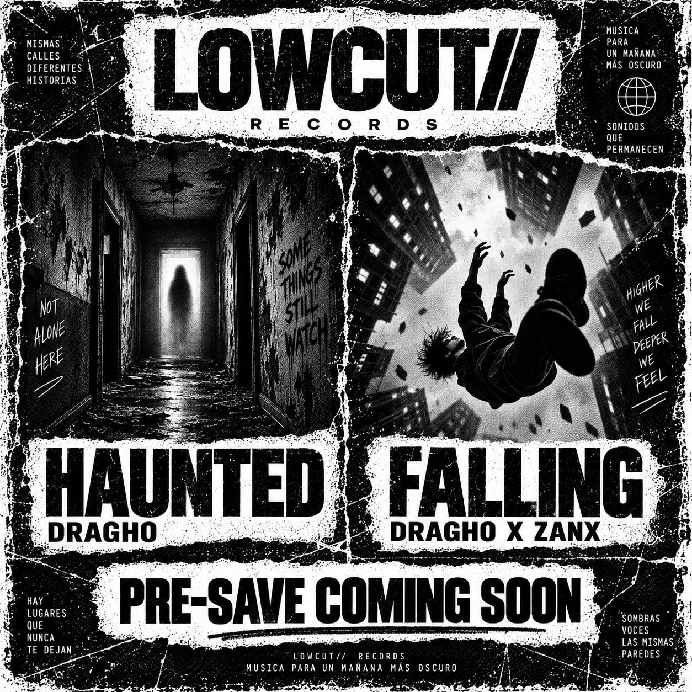
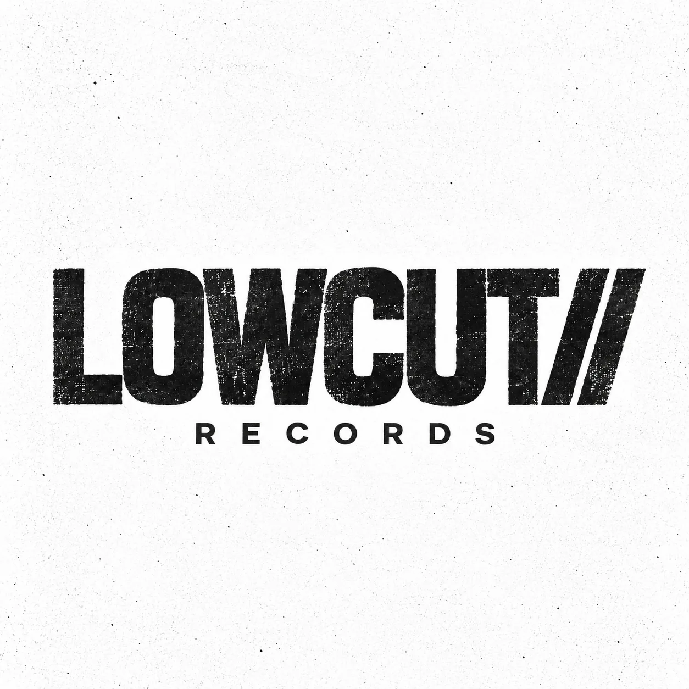

LOWCUT// RECORDS — ELECTRONIC — URBAN — EXPERIMENTAL — ARGENTINA — LOWCUT// RECORDS — ELECTRONIC — URBAN — EXPERIMENTAL — ARGENTINA —
01 / RELEASES
LATEST CUTS
Raw visuals. Distinct identities. No fixed genre.



NOW / NEXT
NEW SIGNALS.
SAME ATTITUDE.
LOWCUT// is built around artists who want room to move between scenes, genres and ideas without losing identity.
02 / ROSTER
ARTISTS
Four emerging voices. One independent platform.

FAYRE
ELECTRONIC / SANTA FE
Fayre is a young Argentinian electronic music producer from Santa Fe, bringing a fresh and distinctive energy to the emerging electronic scene. At 16, his sound moves through Melodic Techno, House and Hard Techno, driven by atmosphere, emotion and powerful club rhythms.
His approach is built around experimentation, immersive melodies, solid basslines and evolving arrangements. Rather than staying inside one genre, Fayre uses every release to explore a different side of electronic music while shaping a clear artistic identity.

DRAGHO
MELODIC / CHACO
Dragho is an Argentine electronic music producer from Chaco focused on melodic and club-oriented sounds. He blends emotional atmospheres with driving rhythms to create music that works on the dancefloor while remaining immersive and expressive.
His productions combine melodic richness and energetic beats, giving his work a distinctive identity within modern electronic music.

ZANX
PRODUCER / BEATMAKER
Zanx is an Argentine producer and beatmaker whose sound is defined by energy, melody and atmosphere. Drawing from trap, phonk and experimental music, he gives each production a distinct identity.
He is currently preparing his debut EP as a producer, marking a new chapter in the evolution of his sound.

DRO
TRAP / EXPERIMENTAL URBAN
Dro is a 15-year-old Argentine artist from Santa Fe who began making music in 2024. His work focuses on trap and experimental urban sounds, with a constant search for a personal identity within a new generation of emerging artists.
He currently works alongside Fayre on projects that connect electronic and urban influences through collaboration and experimentation.
03 / ABOUT
NO BOXES.
JUST SOUND.
LOWCUT// Records is an independent Argentine label founded by Fayre and Dragho. The label is open to electronic, urban and experimental music, with one priority: helping each artist keep a recognizable identity.
LOWCUT// is not built around one genre. It is built around attitude, visual language, collaboration and music with character.
ARGBased in Argentina
∞Open genre policy
50/50Artist / label split
04 / DEMOS
SEND US
SOMETHING
REAL.
Electronic, urban, experimental or somewhere between. Send a private streaming link, a short artist bio and your contact information.
Demo sent. Thanks for sending your music to LOWCUT//.
